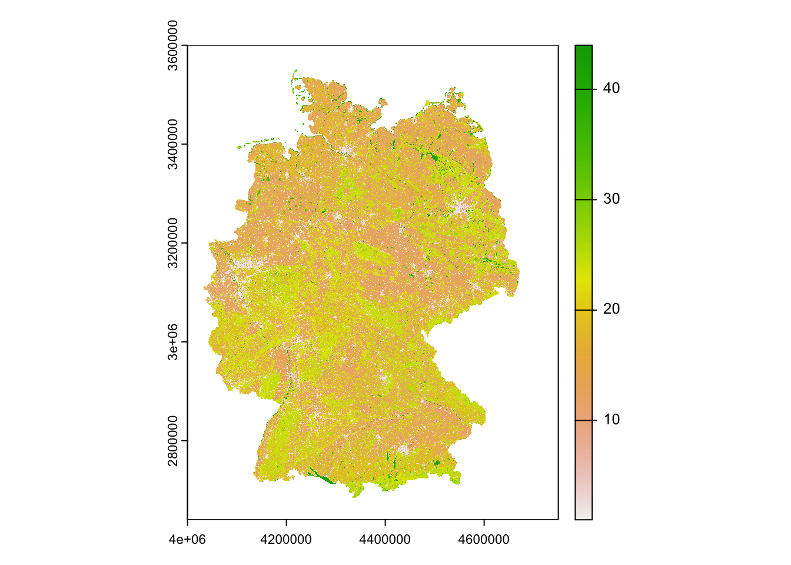
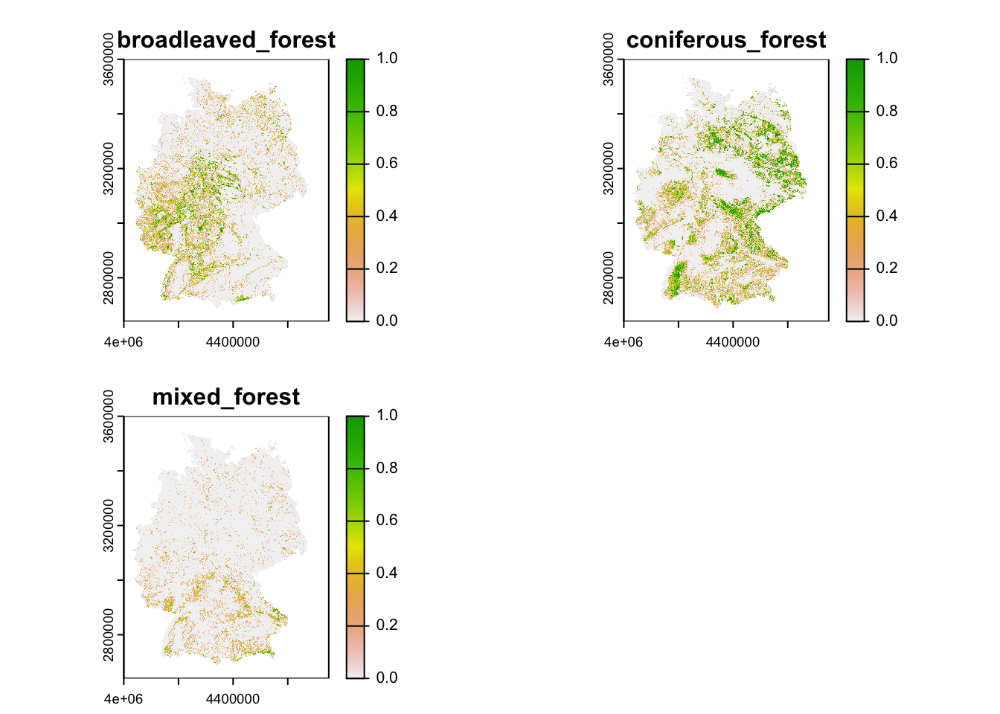
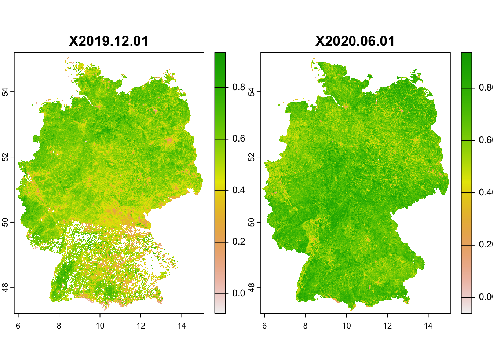

Environmental data in R
RStudio project
Open the RStudio project that we created in the first session. I recommend to use this RStudio project for the entire course and within the RStudio project create separate R scripts for each session.
- Create a new empty R script by going to the tab “File”, select “New File” and then “R script”
- In the new R script, type
# Session 3: Environmental data in Rand save the file in your folder “scripts” within your project folder, e.g. as “3_EnvData.R”
In ecosystem and biodiversity modelling, we often aim to understand how environment is shaping ecosystems and biodiversity patterns. Thus, additional to our biodiversity data we need environmental information. Many data are now available at very high spatial resolution, e.g. lidar data. However, often, high resolution data are not necessarily available globally - although the data are constantly improving. I can’t give you a full overview over all available data sets. Rather, you should get an idea how you process the data to make best use of them for your ecosystem and biodiversity models.
1 Climate data
The geodata package is offering direct access to some
standard repositories; see the help pages ?geodata.
library(geodata)## Loading required package: terra## terra 1.7.46We have already used this for extracting climate data from the worldclim database (http://worldclim.org/). Please note that there are different climate data sets out, e.g. the Chelsa climatologies (http://chelsa-climate.org/) that use a different downscaling algorithm and are preferable in heterogeneous terrain (Karger et al. 2017).
We download the 19 bioclimatic variables at a 10’ resolution
(res=10). The variables are indicated by
var="bio". For an explanation of the 19 bioclimatic see
here: https://www.worldclim.org/data/bioclim.html. (Note that
Chelsa climatologies offer the same set of 19 bioclim variables.) Other
valid variable names are ‘tmin’, ‘tmax’ and ‘prec’. See the
?getData help pages for more information.
library(geodata)
# Download global bioclimatic data from worldclim (you may have to set argument 'download=T' for first download, if 'download=F' it will attempt to read from file):
clim <- geodata::worldclim_global(var = 'bio', res = 10, download = F, path = 'data')
# Now, let's look at the data:
clim## class : SpatRaster
## dimensions : 1080, 2160, 19 (nrow, ncol, nlyr)
## resolution : 0.1666667, 0.1666667 (x, y)
## extent : -180, 180, -90, 90 (xmin, xmax, ymin, ymax)
## coord. ref. : lon/lat WGS 84 (EPSG:4326)
## sources : wc2.1_10m_bio_1.tif
## wc2.1_10m_bio_2.tif
## wc2.1_10m_bio_3.tif
## ... and 16 more source(s)
## names : wc2.1~bio_1, wc2.1~bio_2, wc2.1~bio_3, wc2.1~bio_4, wc2.1~bio_5, wc2.1~bio_6, ...
## min values : -54.72435, 1.00000, 9.131122, 0.000, -29.68600, -72.50025, ...
## max values : 30.98764, 21.14754, 100.000000, 2363.846, 48.08275, 26.30000, ...# Can you explain, what a raster stack is?
plot(clim)
Remember that the terra package offers different
functionalities to manipulate the spatial data, for example aggregating
the data to coarser resolutions (aggregate), cropping
(crop()), and adding spatial layers to a
SpatRaster object (c()):
terra::aggregate(clim[[1]], fact=6, fun="mean")1.1 Future climate scenarios
The Chelsa and worldclim data bases also offer downscaled climate
scenarios. The scenarios stem from the World Climate Research Programme
Coupled Model Intercomparison Projects (CMIPs). The most recent is the
CMIP6 and the corresponding scenarios can be downloaded form the Chelsa
or worlclim websites. For the latter, the downscaled climate scenarios
are again accessible through the geodata package
(?geodata::cmip6_world). In the function
geodata::cmip6_world(), we have to indicate which
model (global circulation model, GCM) we want to download,
which ssp (shared
socioeconomic pathway, SSP) and which time period
(projection period; e.g., 2041-2060). More information on the model
abbreviations and the available SSPs can be found here: https://www.worldclim.org/data/cmip6/cmip6_clim10m.html.
As above, we have to provide var and res
arguments as well.
# Download future climate scenario from 'ACCESS-ESM1-5' climate model.
# Please note that you have to set download=T if you haven't downloaded the data before:
clim_fut <- geodata::cmip6_world(model='ACCESS-ESM1-5', ssp='245', time='2041-2060', var='bioc', download=F, res=10, path='data')
# Inspect the SpatRaster object:
clim_fut## class : SpatRaster
## dimensions : 1080, 2160, 19 (nrow, ncol, nlyr)
## resolution : 0.1666667, 0.1666667 (x, y)
## extent : -180, 180, -90, 90 (xmin, xmax, ymin, ymax)
## coord. ref. : lon/lat WGS 84 (EPSG:4326)
## source : wc2.1_10m_bioc_ACCESS-ESM1-5_ssp245_2041-2060.tif
## names : bio01, bio02, bio03, bio04, bio05, bio06, ...
## min values : -52.8, 0.0, 0.3, 11.1, -28.1, -70.2, ...
## max values : 33.3, 21.5, 94.7, 2299.4, 51.7, 26.2, ...We see that the current and future climate SpatRaster
objects have different layer names. This could cause problems in
distribution modelling and we thus want make sure that they all have the
same layer names.
# Inspect layer names
names(clim)## [1] "wc2.1_10m_bio_1" "wc2.1_10m_bio_2" "wc2.1_10m_bio_3" "wc2.1_10m_bio_4"
## [5] "wc2.1_10m_bio_5" "wc2.1_10m_bio_6" "wc2.1_10m_bio_7" "wc2.1_10m_bio_8"
## [9] "wc2.1_10m_bio_9" "wc2.1_10m_bio_10" "wc2.1_10m_bio_11" "wc2.1_10m_bio_12"
## [13] "wc2.1_10m_bio_13" "wc2.1_10m_bio_14" "wc2.1_10m_bio_15" "wc2.1_10m_bio_16"
## [17] "wc2.1_10m_bio_17" "wc2.1_10m_bio_18" "wc2.1_10m_bio_19"names(clim_fut)## [1] "bio01" "bio02" "bio03" "bio04" "bio05" "bio06" "bio07" "bio08" "bio09"
## [10] "bio10" "bio11" "bio12" "bio13" "bio14" "bio15" "bio16" "bio17" "bio18"
## [19] "bio19"# In this case, let's keep the names of the future climate layers
names(clim) <- names(clim_fut)You can also write SpatRaster objects to file. Here, we
save the SpatRaster objects in a GeoTiff:
terra::writeRaster(clim,filename='data/bioclim_global_res10.tif')
terra::writeRaster(clim_fut,filename='data/bioclim_fut_global_res10.tif')Exercise:
- Take a look at available scenarios and download data for two other GCMs, SSPs, and time periods: https://www.worldclim.org/data/cmip6/cmip6_clim10m.html
2 Land cover data
The geodata package also offers access to other
environmental data useful for species distribution modelling, for
example soil (?geodata::soil_world) and land cover data
(?geodata::landcover).
Here, we will use a different set of land cover data, the Corine Land
Cover (CLC) data coordinated by the European Environment Agency (EEA).
Data for Europe are available through the online portal: https://land.copernicus.eu/pan-european/corine-land-cover/.
The data are free of use but you have to register in order to proceed to
downloading. CLC products are based on photointerpretation of satellite
images and are available for different time slices since 1990. CLC
provide information on the main land cover/use type at 100m spatial
resolution, distinguishing 44 different land cover/use types. The data
are provided as GeoTIFF, which can be easily read in using the
terra::rast() command.
Course participants can download the CLC data for Germany directly from moodle. Please place the GeoTIFF file (and its auxiliary file aux.xml) in your data folder.
# Read in the CLC data for Germany:
corine2018 <- terra::rast('data/CLC2018_DE.tif')
# Read in the legend:
legend <- read.table('data/CLC2018_CLC2018_V2018_20_QGIS.txt',sep=',') # columns 2-4 indicate the RGB colours for reproducing the standard CLC colour maps. Column 6 provides the land use/cover classes.
# The different land cover classes:
legend[,6]## [1] "Continuous urban fabric"
## [2] "Discontinuous urban fabric"
## [3] "Industrial or commercial units"
## [4] "Road and rail networks and associated land"
## [5] "Port areas"
## [6] "Airports"
## [7] "Mineral extraction sites"
## [8] "Dump sites"
## [9] "Construction sites"
## [10] "Green urban areas"
## [11] "Sport and leisure facilities"
## [12] "Non-irrigated arable land"
## [13] "Permanently irrigated land"
## [14] "Rice fields"
## [15] "Vineyards"
## [16] "Fruit trees and berry plantations"
## [17] "Olive groves"
## [18] "Pastures"
## [19] "Annual crops associated with permanent crops"
## [20] "Complex cultivation patterns"
## [21] "Land principally occupied by agriculture with significant areas of natural vegetation"
## [22] "Agro-forestry areas"
## [23] "Broad-leaved forest"
## [24] "Coniferous forest"
## [25] "Mixed forest"
## [26] "Natural grasslands"
## [27] "Moors and heathland"
## [28] "Sclerophyllous vegetation"
## [29] "Transitional woodland-shrub"
## [30] "Beaches dunes sands"
## [31] "Bare rocks"
## [32] "Sparsely vegetated areas"
## [33] "Burnt areas"
## [34] "Glaciers and perpetual snow"
## [35] "Inland marshes"
## [36] "Peat bogs"
## [37] "Salt marshes"
## [38] "Salines"
## [39] "Intertidal flats"
## [40] "Water courses"
## [41] "Water bodies"
## [42] "Coastal lagoons"
## [43] "Estuaries"
## [44] "Sea and ocean"
## [45] "NODATA"# Plot the CLC map
terra::plot(corine2018)
For many modelling applications, we might actually be more interested in proportional land cover, and potentially at a coarser resolution. We can easily achieve this by aggregating the data to the desired coarser resolution, e.g. 1km. We can then express the proportional cover at 1km (or any coarser resolution than the original) resolution as the relative number of 100m cells within the coarser cells with a particular land cover class.
For example, let’s calculate the proportional cover of broad-leaved,
coniferous and mixed forest (CLC classes 23-25), respectively, at a 1 km
resolution. You will see that we achieve this by defining an own in-line
function
function(x,...){ sum(x==23)/(aggregation_factor^2) } as
argument to the function terra::aggregate.
# Number of cells in x/y direction that will be aggregated
aggregation_factor <- 10
# Calculate proportional cover for class 23 (broad-leaved forest) at 1km resolution
corine2018_1km <- terra::aggregate(corine2018,aggregation_factor,
fun=function(x,...){ sum(x==23)/(aggregation_factor^2) })
# Calculate proportional cover for class 24 (Coniferous forest) and add to SpatRaster
corine2018_1km <- c(corine2018_1km,
terra::aggregate(corine2018,aggregation_factor,
fun=function(x,...){ sum(x==24)/(aggregation_factor^2) }))
# Calculate proportional cover for class 25 (Coniferous forest) and add to SpatRaster
corine2018_1km <- c(corine2018_1km,
terra::aggregate(corine2018,aggregation_factor,
fun=function(x,...){ sum(x==25)/(aggregation_factor^2) }))
# Add names to layers
names(corine2018_1km) <- c('broadleaved_forest','coniferous_forest','mixed_forest')
# Plot the proportional covers
plot(corine2018_1km)
# And don't forget to save the resulting raster
terra::writeRaster(corine2018_1km, "data/corine2018_forestcover_1km.tif")Exercise:
- Pick a different spatial resolution (e.g. 5km or 10km) and calculate proportional cover of different agricultural land cover/use classes
3 Remote sensing data
A lot of land cover products are in essence derived from remote sensing data. But there are also other indicators that can be derived from remote sensing information, for example greenness. One such indicator is the Normalised Difference Vegetation Index (NDVI), which is derived from the spectral reflectance measurements acquired in the red (visible) and near-infrared wavebands. Healthy plants absorb red light and reflect near-infrared leading to strong differences in the reflectance of these wavebands. For living plants NDVI should always be positive, while for dead plants or rock or water surfaces NDVI will be negative. Healthy, dense canopy vegetation will have NDVI above 0.5. (These are just rough interpretations, please read up more on NDVI for exact details.)
NDVI data from 2014 onwards can be downloaded from Copernicus Global Land Service (CGLS, https://land.copernicus.eu/global/products/ndvi). The data are available at 300m or 1km resolution every two weeks. Older NDVI data for 1985-2015 are available as product of NOAA Global Inventory Monitoring and Modeling System (GIMMS) from the Big Earth Data Platform, with 8km resolution and images every two weeks.
I will not go into detail of how to download the NDVI data. The data are typically stored in NetCDF format which can also be read into R. I have already downloaded 1km NDVI data from the CGLS database for two time slices (01/12/2019 and 01/06/2020) and extracted the data for Germany. Course participants can download the GeoTiffs from moodle (please put it into your data folder).
# Read in as SpatRaster
ndvi <- terra::rast('data/NDVI_1km_DE.tif')
# plot NDVI layers
plot(ndvi)
Don’t forget to save your workspace!
save.image('data/3_EnvData.RData')Exercise:
- Plot the difference in summer and winter NDVI values. Where do we observe largest difference in greenness between summer and winter? Interpret.